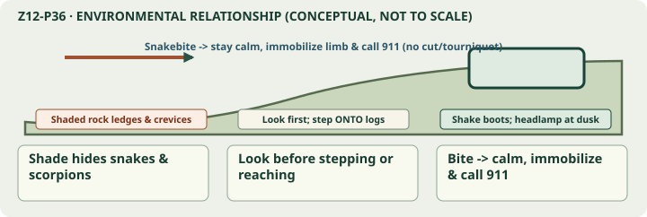

Z12-P36 · Extreme environments · New manuscript
Avoid venomous/spiny desert terrain traps when reaching under rocks or resting
Prevent preventable venomous bites, stings and cactus punctures during desert travel and shaded rest stops.
When it applies · Arid rocky trails, canyon ledges, desert washes and evening camps across the American Southwest and dry plains.
Equipment · Sturdy ankle-covering boots, headlamp at dusk/night, trekking pole for visual checking and medical emergency plan.

Actions
- Watch every step and handhold closely—NEVER reach blind fingers onto rocky ledges, under flat boulders, inside shaded log crevices or into boots/gloves left outside overnight without shaking them out first.[X07, T01, ED]
- Step ONTO logs or rocks first so you can see the shaded backside rather than stepping blindly over them where resting rattlesnakes or scorpions shelter from midday heat.[X07, T01, ED]
- Use a bright headlamp after sunset when nocturnal snakes and scorpions become active along warm trails and camp paths, and keep sturdy boots on rather than walking barefoot.[X07, E02, ED]
Failure recognition · Reaching blindly into a cool rock overhang to sit down during midday heat or putting on unshaken camp shoes at dawn.[X07, T01]
Verify · Confirm visual inspection before sitting, stepping or grabbing ledges, and shake out boots/clothing before dressing in desert camps.[X07, ED]
Stop or change course · If a venomous snakebite or severe allergic sting reaction occurs, move calmly away from the animal, keep the affected limb still at a comfortable level, remove rings/tight bands and call 911 immediately—NEVER cut, suck or tourniquet a snakebite.[T01, T02, X07]
Evidence and editorial notes
- E02 · NPS · Ten Essentials (current web edition)
- Section: Navigation; insulation; emergency shelter; emergency food and water · Conditions: Outdoor trips; adjust kit to season and route
Support: Carry essential systems including navigation, insulation, light, water and emergency shelter.
Limitations: Carrying items without practice or cold-weather verification does not ensure readiness. · Conflicting evidence: None; baseline kit system architecture.
Editorial note: Supports failure-mode packing and kit verification cards. · Specialist reviewer: Field education and search and rescue
Primary source · checked 2026-11-24 - T01 · American Red Cross · First Aid Steps (current web edition)
- Section: First Aid Steps > Check the scene; check the person · Conditions: Lay responder in United States; assess safety before contact
Support: Check scene safety, responsiveness, breathing and immediately life-threatening conditions.
Limitations: Lay guidance does not replace advanced clinical or rescue protocols. · Conflicting evidence: None; universal first-response opening gate.
Editorial note: Anchors scene-safety-first rule across Z01. · Specialist reviewer: EMS and wilderness medicine
Primary source · checked 2026-11-24 - T02 · American Red Cross · First Aid Steps (current web edition)
- Section: First Aid Steps > Call 9-1-1 · Conditions: Lay emergency response to unresponsiveness, abnormal breathing or severe bleeding
Support: Activate EMS and get needed equipment. Follow dispatcher directions and act within training.
Limitations: Remote locations may delay EMS arrival, requiring sustained stabilization after activation. · Conflicting evidence: None; aligns with NPS-E.
Editorial note: Mandates early emergency activation and dispatcher adherence. · Specialist reviewer: EMS and wilderness medicine
Primary source · checked 2026-11-24 - X07 · NPS · Death Valley Safety (Desert Travel and Heat) (current web edition)
- Section: Death Valley Safety > Desert Heat, Dehydration, Flash Floods and Vehicle Breakdown · Conditions: Arid desert travel, canyon country and extreme summer heat
Support: Desert heat accelerates fluid and electrolyte loss rapidly, temperatures inside parked vehicles spike to fatal levels within minutes, dry washes flash-flood from distant storms and staying with a disabled road vehicle is generally safer than walking into extreme heat.
Limitations: Cell service is widely absent across desert basins; water needs can exceed 1 gallon/day dramatically during heat. · Conflicting evidence: None; aligns with CDC-HEAT and NWS-HEAT.
Editorial note: Core desert-environment evidence across Z12 heat/arid cards. · Specialist reviewer: Desert safety and emergency medicine
Primary source · checked 2026-11-24
Source lineage · NPS desert safety and ARC first aid; new manuscript · Classification · New manuscript.